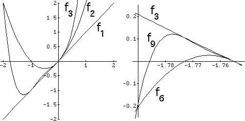

| On the left we have the graphs of f1, f2, and f3. |
| The zero of f1 is the center of the
big cardioid, at |
| The other zero of f2 is the center of the 2-cycle disc. |
| The other zero of f3 is the center of the 3-cycle cardioid. |
|  |
| On the right we see the graphs of f3, f6, and f9, near the left zero of f3. |
| Note this plot resembles a vertical reflection fo the left plot. |
| This is the key observation of renormalizaion: rescaled higher polynomials resemble the original polynomials. |
Return to Hurwitz-Robucci scaling.